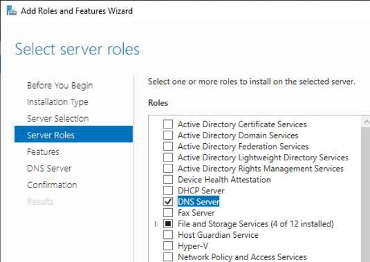
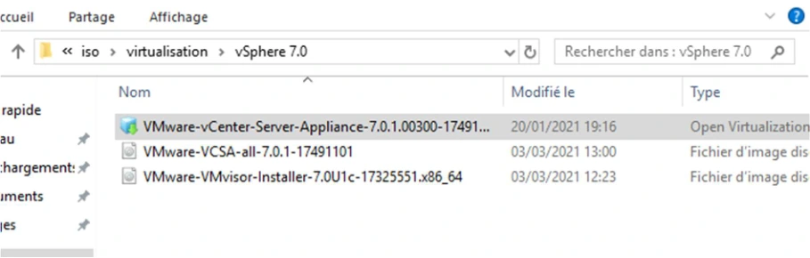
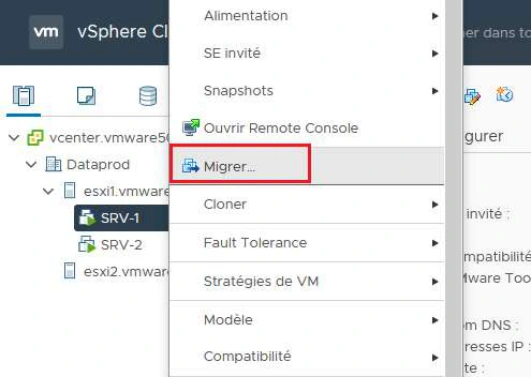

Module 08 — Gestion du datacenter¶
La transcription du support Drive et l’aide pédagogique sont séparées pour rendre leur provenance explicite.
SOURCE DRIVE · TRANSCRIPTION DU SUPPORT
Le contenu des documents du dossier TSSR est transcrit ci-dessous, page par page. Les textes et tableaux sont intégrés à la page Web. Aucun fichier PDF, aucune diapositive entière ni aucune reproduction de page n’est affiché. Seuls des croquis ou visuels isolés et vérifiés peuvent accompagner la transcription. Les versions et les consignes restent celles des supports de formation. Les compléments IA sont conservés dans leur onglet distinct.
Support · Module 08 - Support de cours · 13 pages transcrites
Module 08 – Gestion du datacenter
Gestion du datacenter
Objectifs
- Administrer les éléments du datacenter
- Augmenter la sécurité en limitant les privilèges des utilisateurs
Gestion du datacenter
Contexte et actions de gestion
- Dans ce chapitre seront abordées les principales tâches de gestion d’un environnement vSphere
- Certaines tâches sont réalisables sur des hôtes autonomes, d’autres nécessitent que les hôtes soient dans un contexte de datacenter (vCenter requis)
| Tâche | Disponibilité sur des hôtes autonomes | Disponibilité dans un contexte de datacenter |
|---|---|---|
| Gestion des ressources et pools de ressources | Oui | Oui |
| Utilisation du web client vSphere | Non | Oui |
| Utilisation de vMotion et Storage vMotion | Non | Oui |
| Gestion de modèles VMTX | Non | Oui |
| Gestion des rôles, utilisateurs et privilèges | Oui | Oui |
Gestion du datacenter
La gestion des ressources
La gestion des ressources
La réservation de ressources
- Il est possible d’affecter à l’ensemble des VM d’un hôte plus de ressources que celles dont il dispose réellement (toutes les VM n’étant pas en fonctionnement en même temps)
- La problématique se pose si une VM « plus importante » qu’une autre ne peut être démarrée faute de ressources
- Pour répondre à cette problématique, il est possible de réserver des ressources
Hôte
- Pour des machines virtuelles
- Pour des ensembles de ressources*
- Pour le cluster
RAM
CPU
* Point abordé dans la diapositive suivante
Réservé pour environnement
de production
VM PROD
La gestion des ressources
Gestion des pools de ressources
- Le pool de ressources : objet logique auquel est affectée une partie des ressources physiques (CPU et RAM) réelles
- Il permet :
- De réserver des ressources en fonction de leur utilisation
- De restreindre les ressources matérielles de certains environnements (tests)
- La configuration de pools peut permettre de garantir la disponibilité de ressources pour les besoins les plus cruciaux pour l’entreprise
Gestion du datacenter
vCenter et le contexte
de datacenter
vCenter et le contexte de datacenter
vCenter et le datacenter
- L’ajout d’un vCenter à une infrastructure va permettre :
- De créer un datacenter et de lui affecter des hôtes afin de les regrouper au sein d’une même entité de gestion
- De disposer d’objets (réseau et stockage) uniques et utilisables sur tous les hôtes du datacenter
- D’utiliser les fonctionnalités de déplacement de VM à chaud (vMotion)
- De créer un contexte de cluster (non abordé ici) et de bénéficier des fonctionnalités de haute disponibilité associées
- vCenter est un élément indispensable à la mise en œuvre et au fonctionnement d’un ensemble de services
- Il est recommandé qu’il soit installé sur une machine virtuelle hautement disponible de l’infrastructure
vCenter et le contexte de datacenter
vCenter Serveur VS VCSA
- vCenter est un outil de la suite vSphere soumis à licence.
- Deux types d’implémentations sont possibles :
- Utiliser l’appliance VCSA fournie par VMware
- Installer l’outil sur un OS serveur Microsoft en 64 bits
| VCSA | vCenter Serveur | |
|---|---|---|
| Nb d’hôtes maximum | 5 ESXi | 1000 ESXi |
| Nb VM maximum | 50 VM | 10 000 VM |
| Avantages | Simplicité de mise en œuvre | Capacité de prise en charge supérieures |
| Inconvénients | Limites de prise en charge | Mise en œuvre plus complexe et coûteuse |
vCenter et le contexte de datacenter
Méthodes d’accès à l’appliance vCenter
- Les actions de gestion du vCenter sont réalisées depuis le client Web vSphere (via un navigateur)
| Port | Protocole | Outil |
|---|---|---|
| 5480 | HTTPS | Gestion du VCSA |
| 9443 | HTTPS | Gestion vSphere |
| 443 | HTTPS | Gestion vSphere |
- Les actions propres à la gestion du VCSA peuvent être effectuées via une connexion HTTPS au port 5480
Gestion du datacenter
Les modèles de machines
virtuelles
Les modèles de machines virtuelles
Les modèles
| Modèle OVF | Modèle VMTX | |
|---|---|---|
| Prise en charge | Toutes les solutions VMware (Player, Workstation, vSphere), VirtualBox, XenServer | Suite VMware vSphere dans un contexte de datacenter |
| Action possibles | Possibilité d’import / export de l’élément | Cloner VM vers Template. Dupliquer VM vers Template. Déployer VM depuis Template. Possibilité de customisation. |
| Contexte d’utilisation | Pour toute mise à disposition d’une machine virtuelle | Base utilisée pour la mise en œuvre de l’OS et ses correctifs sur de nouvelles VM |
OVF ou OVA ? Un fichier OVA est une archive compressée qui contient les éléments du dossier OVF
Les modèles de machines virtuelles
Les modèles VMTX
- Les modèles VMTX sont des images de machines virtuelles qui sont utilisées pour permettre un déploiement optimisé de nouvelles machines virtuelles dans l’infrastructure vSphere
- Ils peuvent intégrer :
- Un système d’exploitation
- Des pilotes
- Des applications
- Des correctifs et mises à jour
- Ils sont généralement personnalisés pour leur utilisation dans le contexte de l’entreprise
Les modèles de machines virtuelles
Gestion des modèles VMTX
- Les tâches de gestion peuvent être initiées :
- Depuis la catégorie « VM et modèles » de l’inventaire
- Depuis le composant « Modèle » des actions proposées sur une machine virtuelle
- Deux types d’action peuvent être entreprises :
Convert to template
VM
Modèle
- La conversion permet de transformer une VM en modèle ou inversement
Convert to VM
VM
Modèle
Modèle
+
Clone to template
VM
VM
- Le clonage conserve l’élément original
et le duplique en modèle ou VM
+
Deploy VM from this template
VM
Modèle
Modèle
Les modèles de machines virtuelles
Personnalisation des modèles
- La personnalisation du système post déploiement permet d’automatiser les tâches de :
- Renommage de la machine pour son système d’exploitation
- Modification de son adressage IP
- Régénération de son identifiant de sécurité
- Prérequis de personnalisation :
- Les outils d’intégration VMware doivent être installés sur la VM
- SYSPREP doit être implémenté sur le vCenter s’il ne l’est pas nativement sur le SE invité
SYSPREP non intégré
SYSPREP intégré
Les modèles de machines virtuelles
Étapes de mise en œuvre de templates VMTX
- Préparer la machine virtuelle de référence
- Y installer les outils d’intégration (vmtools)
- Convertir cette machine virtuelle en modèle
Processus de personnalisation - optionnel
intégrer au besoin sysprep au serveur vCenter
depuis l’assistant personnalisation, fournir les informations nécessaires à la personnalisation
l’assistant personnalisation génère un fichier de personnalisation qui peut être importé / exporté
Les modèles de machines virtuelles
Les modèles OVF
- Le format de modèle OVF (Open Virtual machine Format) est proposé comme format standard de modèle de machines virtuelles
- Il facilite les actions d’import et d’export de machines virtuelles
- Les fichiers modèles ainsi générés peuvent facilement être intégrés au sein d’autres environnements et solutions de virtualisation
- Prise en charge de ce format :
- Sur les environnements de virtualisation VMware (Player, Workstation, vSphere)
- Par les solutions de virtualisation VirtualBox, et XenServer
- Des outils permettent son import pour Hyper-V, QEMU / KVM
Fichiers OVF
Gestion du datacenter
Utilisateurs et privilèges
Utilisateurs et privilèges
Gestion des utilisateurs, groupes et privilèges
- La gestion des utilisateurs et groupes peut être réalisée au niveau du vCenter ou au niveau de l’ESXi.
SSO et contexte de domaine
Si l’on est dans un contexte de domaine d’authentification, le SSO peut être configuré afin d’utiliser des utilisateurs et groupes du domaine.
vCenter
ESXi
Possibilité d’affectation de
privilèges VM
- Les permissions peuvent être accordées sur tous les objets de l’inventaire : vCenter, datacenter, cluster, datastore, ESXi, VM […]
Les utilisateurs créés sur le vCenter pourront disposer de privilèges sur toute l’infrastructure vSphere. Les utilisateurs créés sur l’ESXi pourront disposer de privilèges uniquement sur cet ESXi ou sur des VM qu’il héberge.
Utilisateurs et privilèges
Méthodologie d’affectation des utilisateurs
- Créer les utilisateurs
- Créer les groupes et leur affecter des utilisateurs
- Créer des rôles, leur affecter les privilèges détaillés souhaités
- Sélectionner l’objet d’inventaire sur lequel affecter les privilèges ; lui associer les groupes et rôles correspondants
Utilisateurs et privilèges
Privilèges d’accès – Bonnes pratiques
- Utiliser des groupes plutôt que des utilisateurs
- Ne pas affecter plus de privilèges que nécessaire : si un rôle offre plus de privilèges que nécessaire, il pourra être dupliqué et modifié
- Définir ses règles sur les éléments de plus haut niveau, l’héritage permettra leur propagation à l’ensemble d’éléments enfants
Gestion du datacenter
Déplacement de machines
virtuelles
Déplacement de machines virtuelles
Les actions de migration / Déplacement
- Une machine virtuelle a besoin pour son fonctionnement d’un ensemble de ressources
- Ces ressources lui sont mises à disposition par l’hôte qui l’héberge
- Certaines de ses ressources lui sont propres : CPU, RAM, réseau
- D’autres, tel que le stockage peuvent être externes et accessibles à un ensemble d’hôtes
Hôte
Configuration
Configuration
RAM
RAM
Stockage
VM
VM
CPU
CPU
Disque
Réseau
Réseau
Disque
Les fonctionnalités abordées dans les diapositives suivantes permettent le
déplacement des deux ensembles d’éléments présentés ici.
Déplacement de machines virtuelles
Les actions de migration
Les actions de migration accessibles sur les VM d’un datacenter utilisent :
- vMotion pour permettre le
déplacement à chaud d’une
machine virtuelle d’un hôte vers
un autre hôte
vMotion
Hôte
Configuration
RAM
Stockage
VM
CPU
Réseau
Disque
Hôte
Configuration
- Storage vMotion pour permettre le déplacement à chaud du
stockage d’une VM d’un datastore
vers un autre datastore
RAM
Stockage
VM
CPU
Réseau
Disque
Déplacement de machines virtuelles
vMotion / Storage vMotion – Mise en œuvre
Prérequis de mise en œuvre :
- La fonctionnalité vMotion doit être active sur au moins un vSwitch de l’hôte source et de destination
- L’adressage des hôtes sources et destination utilisée par la fonctionnalité doit être du même domaine de diffusion
- L’emplacement de stockage des VM à déplacer doit être accessible aux 2 hôtes
Déplacement :
- Dans le contexte du datacenter, choisir l’action de déplacement proposée sur la VM
- L’assistant permet alors de déplacer :
- La VM vers un autre hôte
- Le stockage de la VM vers un autre point de stockage
Quelques cas de problématiques de déplacement de VM : une image iso est présente dans la machine virtuelle ; le groupement de port de raccordement est inexistant sur l’hôte de destination ; le niveau de support d’instructions CPU ne concorde pas entre les deux hôtes.
Référence du document : 1lJwBs-wuJ3ZNnzcz-StT_e0Q41z8Be4D · SHA-256 b63201f3c1f1a2bc…
Énoncé · TSSR110-Virtualisation_Mise en Situation - Module 8 - Gestion des Modeles · 2 pages transcrites
Énoncé :
Atelier N°6
TP du Module 08 – Gestion de modèles OVF
Avant de démarrer ce TP, il convient d’avoir suivi les prérequis du Module 8.
Durée estimée
1 heure
Objectif :
Exporter et importer une machine virtuelle sous forme de modèle OVF d’un hyperviseur vers un autre
Prérequis :
Disposer de deux hyperviseurs ESXi1 et ESXi2
Disposer d’une machine virtuelle SRV-1 hébergée sur ESXi1 (Atelier 3 réalisé)
Énoncé :
Cet atelier a pour objectif d’illustrer l’exportation d’une machine virtuelle depuis l’hyperviseur ESXi1 sous forme d’un modèle OVF. Dans un deuxième temps, un import de ce modèle sera réalisée vers l’hyperviseur ESXi2.
- Se connecter à l’hyperviseur ESXi1 avec un navigateur Internet (Firefox ou Chrome)
Sur l’hyperviseur ESXi1
- Depuis le menu « Machines virtuelles », cliquer droit sur la VM « SRV-1 » et sélectionner « Exporter ». au format OVF la machine virtuelle « SRV_1 »
- Dans la boite de dialogue qui s’affiche, cocher tous les choix possibles sauf le dernier (« nvram »).
Le téléchargement doit commencer dans votre navigateur, les fichiers seront stockés localement sur votre système.
- Après quelques minutes, observer à l’emplacement de stockage par défaut, l’apparition des fichiers « .mf », « .ovf » et « .vmdk ».
- Se connecter à l’hyperviseur ESXi2 avec un navigateur Internet
Sur l’hyperviseur ESXi2
- Importer les fichiers précédemment récupérés sur votre système sous un nouveau nom « SRV-2 », en cliquant sur le lien « Créer/Enregistrer une machine virtuelle ».
- Les fichiers relatifs à la machine virtuelle SRV-2 seront placés dans la banque de données « DS-ISCSI ».
Pour observer l’avancement du processus, cliquer tout en bas du navigateur sur « Tâches récentes » si cela n’a pas déjà été fait.
- A l’issue de l’opération, une nouvelle machine virtuelle doit faire son apparition dans l’inventaire d’ESXi2. Démarrer cette VM pour contrôler son bon fonctionnement.
Référence du document : 1aEQ65iX_cHIEDDyrYFM1jf07rL3XOmtU · SHA-256 37512ad40c70e5b4…
Énoncé · TSSR110-Virtualisation_Mise en Situation - Module 8.2 - DataCenter · 4 pages transcrites
Énoncé :
Atelier N°7
TP du Module 08 – Les composants d’une infrastructure vSphere
Avant de démarrer ce TP, il convient d’avoir suivi les prérequis du Module 8.
Durée estimée
2 à 3 heures
Objectif :
Déployer une VM vCenter sous forme d’appliance
Géré un Datacenter vSphere
Utiliser les fonctionnalités fournies par vCenter, notamment la migration vMotion et Storage vMotion
Prérequis :
Disposer de deux hyperviseurs ESXi1 et ESXi2 configurés (Atelier 3, 4 et 5 réalisé)
Disposer de la machine virtuelle SRV_2K19 (Atelier 1 réalisé)
Disposer des machines virtuelles SRV-1 et SRV-2 hébergées sur ESXi1 et ESXi2 (Atelier 6 réalisé)
Page sans consigne dans le document.
Énoncé :
Dans cet atelier, il s’agira de déployer une appliance vCenter (vCSA) permettant de gérer une infrastructure vSphere composée de nos 2 hyperviseurs. Pour cela un centre de données sera créé permettant [phrase incomplète dans le support].
I - Phases préparatoires à l’intégration du vCSA
Sur la machine virtuelle SRV_2K19
- Ajouter une deuxième carte réseau et configurer la comme suit :
- Adresse IP statique : 10.5.XX.21 / 16.
- Adresse du serveur DNS : 10.5.XX.21
- Installer le rôle de serveur DNS.
- Avec la console Gestion DNS, créer une nouvelle zone nommée vmwareXX.lab, créer les enregistrements DNS « A » d’ESXi1, ESXi2 et vCenter (voir sa configuration au point suivant) afin de résoudre leurs noms en adresses IPs .
Sur les hyperviseurs ESXi1, ESXi2
- Modifier les configurations IP via leur console locale (touche « F2 » sur les VMs) :
- Adresse du serveur DNS => 10.5.XX.21
- Suffixe du domaine => vmwareXX.lab
II - Intégration de vCenter à l’infrastructure vSphere
- Récupérer sur le partage « iso\virtualisation\vSphere 7 » sur distrib, l’appliance vCenter (VMware-vCenter-Server-Appliance*.ova)
- Une fois récupéré, double cliquer sur le fichier et l’ouvrir avec Workstation
- Déployer l’appliance en mode « Tiny server with embedded PSC »
- Fournir à l’assistant graphique à minima les points de configuration suivants : BIEN LIRE LES INDICATIONS !!!
- Attribuer comme adresse statique : 10.YY.XX.10 / 16
- Indiquer la passerelle de la salle 10.YY.255.254
- Saisir l’adresse IP de votre serveur DNS (10.YY.XX.21)
- Allouer le nom d’hôte vcenter.vmwareXX.lab
Attendre quelques minutes que l’écran noir et bleu s’affiche. Cela peut-être un peu long….
- Définir le mot de passe root (attention ! Le clavier est en qwerty ! Utilisez des touches communes ! (par exemple « [valeur fournie par le formateur] »)
Configuration du vCSA (port 5480)
- Lancez un navigateur Internet depuis un système utilisant votre contrôleur de domaine en tant que solveur DNS, puis saisissez le nom FQDN du vCSA, en précisant le port 5480.
- Continuer le paramétrage en cliquant sur « configurer », puis suivre l’assistant. Vous créerez un nouveau domaine SSO, en conservant le nom par défaut (vsphere.local).
Si vous constatez que la configuration « boucle » et ne progresse pas, actualisez votre navigateur et recommencez du début.
Configuration de l’infra vSphere (port 443)
- Depuis votre navigateur, changez le port en 443
- Créer un nouveau datacenter DCPROD et lui ajouter les 2 ESXi comme hôtes
Déplacement à chaud de VM et stockage Sur ESXi2
- Relever l’espace occupé / disponible sur DS-iSCSI
- S’assurer que la machine virtuelle W7-CL-003 est bien démarrée. Sans l’arrêter, procéder à son déplacement vers la banque de donnée DS-iSCSI
- Contrôler l’impact de ce déplacement sur DS-iSCSI S’assurer que la VM W7-CL-003 est en fonctionnement puis la déplacer vers ESXi1. Contrôler le bon déroulement de l’opération
Référence du document : 1mJ95hF2dWIBzbogKPWvXWc_QVAWxZljr · SHA-256 1bb70675fe14d805…
Correction · TSSR110-Virtualisation_Mise en Situation - Module 8 - Gestion des Modeles - Solution · 6 pages transcrites
Correction originale : à consulter après avoir tenté l’exercice.
Solutions :
Atelier N°6
TP du Module 08 – Gestion des Modèles
Avant de démarrer ce TP, il convient d’avoir suivi les prérequis du Module 8.
Durée estimée
1 heure
Objectif :
Exporter et importer une machine virtuelle sous forme de modèle OVF d’un hyperviseur vers un autre
Prérequis :
Disposer de deux hyperviseurs ESXi1 et ESXi2
Disposer d’une machine virtuelle SRV-1 hébergée sur ESXi1 (Atelier 3 réalisé)
Énoncé :
Cet atelier a pour objectif d’illustrer l’exportation d’une machine virtuelle depuis l’hyperviseur ESXi1 sous forme d’un modèle OVF. Dans un deuxième temps, un import de ce modèle sera réalisée vers l’hyperviseur ESXi2.
- Se connecter à l’hyperviseur ESXi1 avec un navigateur Internet (Firefox ou Chrome)
Sur l’hyperviseur ESXi1
- Depuis le menu « Machines virtuelles », cliquer droit sur la VM « SRV-1 » et sélectionner « Exporter ». au format OVF la machine virtuelle « SRV_1 »
- Dans la boite de dialogue qui s’affiche, cocher tous les choix possibles sauf le dernier (« nvram »).

Le téléchargement doit commencer dans votre navigateur, les fichiers seront stockés localement sur votre système.
- Après quelques minutes, observer à l’emplacement de stockage par défaut, l’apparition des fichiers « .mf », « .ovf » et « .vmdk ».
- Se connecter à l’hyperviseur ESXi2 avec un navigateur Internet
Sur l’hyperviseur ESXi2
- Importer les fichiers précédemment récupérés sur votre système sous un nouveau nom « SRV-2 », en cliquant sur le lien « Créer/Enregistrer une machine virtuelle ».

- Les fichiers relatifs à la machine virtuelle SRV-2 seront placés dans la banque de données « DS-ISCSI ».

- Ignorer le message d’erreur et lancer tout de même l’importation.
Pour observer l’avancement du processus, cliquer tout en bas du navigateur sur « Tâches récentes » si cela n’a pas déjà été fait.
- A l’issue de l’opération, une nouvelle machine virtuelle doit faire son apparition dans l’inventaire d’ESXi2. Démarrer cette VM pour contrôler son bon fonctionnement.
Référence du document : 1EOuhufWKq38m1yt7098jgIZGjnkTXK2t · SHA-256 11683951f3c6d059…
Correction · TSSR110-Virtualisation_Mise en Situation - Module 8.2 - DataCenter - Solution · 18 pages transcrites
Correction originale : à consulter après avoir tenté l’exercice.
Solutions :
Atelier N°7
TP du Module 08 – Les composants d’une infrastructure vSphere
Avant de démarrer ce TP, il convient d’avoir suivi les prérequis du Module 8.
Durée estimée
2 à 3 heures
Objectif :
Déployer une VM vCenter sous forme d’appliance
Géré un Datacenter vSphere
Utiliser les fonctionnalités fournies par vCenter, notamment la migration vMotion et Storage vMotion
Prérequis :
Disposer de deux hyperviseurs ESXi1 et ESXi2 configurés (Atelier 3, 4 et 5 réalisé)
Disposer de la machine virtuelle SRV_2K19 (Atelier 1 réalisé)
Disposer des machines virtuelles SRV-1 et SRV-2 hébergées sur ESXi1 et ESXi2 (Atelier 6 réalisé)
Énoncé :
Dans cet atelier, il s’agira de déployer une appliance vCenter (vCSA) permettant de gérer une infrastructure vSphere composée de nos 2 hyperviseurs. Pour cela un centre de données sera créé permettant [phrase incomplète dans le support].
I - Phases préparatoires à l’intégration du vCSA
Sur la machine virtuelle SRV_2K19
- Ajouter une deuxième carte réseau et configurer la comme suit :
- Adresse IP statique : 10.5.XX.21 / 16.
- Adresse du serveur DNS : 10.5.XX.21
Informations dans les visuels du support
- Dans Virtual Machine Settings, sélectionner Network Adapter 2, cocher Connect at power on et choisir Bridged.
- Dans les connexions réseau de Windows, ouvrir les propriétés IPv4 d’Ethernet1. Renseigner 10.YY.XX.21 et le masque 255.255.0.0.
- La capture laisse la passerelle vide et indique 10.YY.XX.21 comme serveur DNS préféré.
- Renommer le serveur afin de lui ajouter le suffixe DNS principal vmwareXX.lab
- Installer le rôle de serveur DNS.
- Avec la console Gestion DNS, créer une nouvelle zone nommée vmwareXX.lab, créer les enregistrements DNS « A » d’ESXi1, ESXi2 et vCenter (voir sa configuration au point suivant) afin de résoudre leurs noms en adresses IPs .


- L’assistant de création d’une nouvelle zone s’affiche. Choisir zone principale
- Définir le nom de la nouvelle zone
- Conserver tous les paramètres par défaut jusqu’à parvenir à la fin de l’assistant.
- Configurer les enregistrements DNS avec les noms d’ESXi1, ESXi2 et vCenter et leurs
adresses IP respectives
- Une fois les enregistrements configurés, voici ce que cela doit donner (hormis les
adresses IP qui seront différentes)
Sur les hyperviseurs ESXi1, ESXi2
- Modifier les configurations IP des hyperviseurs via leur console locale (touche « F2 » sur les VMs) :
- Adresse du serveur DNS => 10.5YY.XX.21
- Suffixe du domaine => vmwareXX.lab
- Appuyer sur la touche [Echap], puis confirmer les modifications
- Faire les mêmes manipulations sur l’hyperviseur ESXi2
II - Intégration de vCenter à l’infrastructure vSphere
- Récupérer sur le partage « iso\virtualisation\vSphere 7 » sur distrib, l’appliance vCenter (VMware-vCenter-Server-Appliance*.ova)


- Une fois récupéré, double cliquer sur le fichier et l’ouvrir avec Workstation
- Déployer l’appliance en mode « Tiny server with embedded PSC »
- Fournir à l’assistant graphique à minima les points de configuration suivants : BIEN LIRE LES INDICATIONS !!!
- Attribuer comme adresse statique : 10.YY.XX.10 / 16
- Indiquer la passerelle de la salle 10.YY.255.254
- Saisir l’adresse IP de votre serveur DNS (10.YY.XX.21)
- Allouer le nom d’hôte vcenter.vmwareXX.lab
Attendre quelques minutes que l’écran noir et bleu s’affiche. Cela peut-être un peu long….
- Définir le mot de passe root (attention ! Le clavier est en qwerty ! Utilisez des touches communes ! (par exemple « [valeur fournie par le formateur] »)
Configuration du vCSA (port 5480)
- Lancez un navigateur Internet depuis le serveur SRV_2K19. En effet, c’est le seul système avec interface graphique qui utilise comme résolveur DNS, le serveur DNS que vous avez configuré précédemment. Dans la barre d’URL saisir le nom FQDN du vCSA, en précisant le port 5480.
- Continuer le paramétrage en cliquant sur « configurer », puis suivre l’assistant. Vous créerez un nouveau domaine SSO, en utilisant le nom par défaut (vsphere.local).
- L’authentification en tant que root vous est demandé :
- Ne pas fermer la fenetre : attendre la fin de la configuration.
Si vous constatez que la configuration « boucle » et ne progresse pas, actualisez votre navigateur et recommencez du début.
Configuration de l’infra vSphere (port 443)
- Depuis votre navigateur Internet, toujours sur la VM SRV_2K19, enlever le numéro de port et se connecter en HTTPS sur vcenter.
- Cet écran de bienvenue doit alors s’afficher :
- S’authentifier avec le compte administrator@vsphere.local
- Une fois connecté, créer un nouveau datacenter nommé Dataprod
et lui ajouter les 2 ESXi comme hôtes.
- Ajout des Hotes ESXi-1 & ESXi-2 par clic droit sur le datacenter
- Pour ajouter les hôtes, vous devez fournir les mots de passe root configurés sur ceux-
ci (et non pas celui de vcenter).
- Répondre « oui » à l’alerte de sécurité
- Conserver le sparamètres restant par défaut jusqu’à la fin de l’assistant.
- Puis, intégrer ESXi-2 de la meme manière.
III – Utilisation de la fonctionnalité vMotion offerte par vCenter
- S’assurer que la machine virtuelle SRV-2 est bien démarrée. Sans l’arrêter, procéder au déplacement des ressources de calculs vers l’hôte ESXi1.
- Situation intiale :
- Lancement de la migration vers ESXi1 :
- Un assistant s’éxécute alors, conserver le choix par défaut :
- Sélectionner l’hyperviseur de destination (ESXi1 ici) :
- Conserver le choix du groupement de port GRP-VMNET par défaut :
- Puis conserver les paramètres par défaut jusque la fin de l’assistant.
- Démarrer la VM SRV-1 si elle n’est pas en cours de fonctionnement. Déplacer les fichiers de la VM actuellement stockés sur la banque de données DS-Local vers DS-NFS.
- Clic droit sur la VM SRV-1
- Choisir la deuxième case à cocher :
- Enfin, choisir la destination du stockage de la VM


- Contrôler l’impact des déplacements dans les banques de données. Contrôler le bon déroulement des opérations, les VM sont-elles toujours fonctionnelles ?
- Les fichiers de la VM SRV-1 sont désormais sur la banque de données DS-NFS
- La VM SRV-2 utilise maintenant les ressources de l’hyperviseur ESXi1 :
Référence du document : 1aqFok0ywJG-uHa1MMBbH0rdXW7BdvaoY · SHA-256 21623aba4c39c4b0…
Complément IA / externe au cours — fiche pédagogique du portail
Cette fiche contient une reformulation et des aides d’apprentissage rédigées par IA. Elle est distincte de la transcription des documents du Drive et ne la remplace pas. Les schémas de synthèse de cette fiche sont des illustrations IA / externes au cours, sauf les captures explicitement attribuées à un document source.
Ce module rassemble les deux ESXi sous vCenter. Il utilise leurs réseaux et banques partagées pour travailler sur les modèles, les autorisations et deux types de migrations.
Objectifs¶
- Distinguer réservation, limite et parts d’un pool de ressources.
- Utiliser un modèle et reconnaître les objets de l’inventaire vCenter.
- Associer une identité, un rôle et un objet pour attribuer une permission.
- Préparer le DNS, intégrer les hôtes à un datacenter et vérifier le résultat des migrations.
1. Distribuer les ressources et organiser l’inventaire¶
Le cours présente la possibilité d’attribuer aux VM plus de ressources que la capacité physique totale. Si plusieurs charges les demandent au même moment, une VM prioritaire peut manquer de capacité. Un pool regroupe les ressources CPU et RAM de VM ou d’autres pools.
| Réglage | Rôle | Contrôle |
|---|---|---|
| Réservation | Garantir une quantité de ressources | Vérifier la capacité réellement disponible pour la garantir. |
| Limite | Fixer le maximum utilisable | Confirmer que la charge peut fonctionner dans ce plafond. |
| Parts | Donner une priorité relative en cas de contention | Comparer des objets qui se disputent les mêmes ressources. |
Dans son contexte, le support propose d’héberger vCenter sur une VM hautement disponible. Certaines tâches sont accessibles sur un hôte autonome, tandis que les opérations portant sur l’inventaire regroupé utilisent vCenter.
Un datacenter vCenter regroupe des objets d’inventaire, notamment hôtes, réseaux, VM et banques de données. Le support situe aussi les clusters et la haute disponibilité. Une gestion regroupée facilite les tâches et la délégation. La disponibilité demande des ressources et mécanismes adaptés à la charge.
Le comparatif historique met en regard une appliance VCSA et une installation Windows 64 bits. Il indique cinq hôtes et cinquante VM d’un côté, mille hôtes et dix mille VM de l’autre. Ces chiffres caractérisent les colonnes et versions du support. Le TP utilise HTTPS 5480 pour administrer l’appliance, puis HTTPS 443 pour vSphere. Le support cite également 9443 dans son contexte historique.
2. Préparer et déployer les modèles¶
| Objet ou action | Résultat |
|---|---|
| OVF | Décrit une VM et les éléments à transporter entre environnements compatibles. |
| OVA | Regroupe le contenu du paquet OVF dans une archive. L’archive peut être empaquetée sans compression. |
| VMTX | Modèle de VM utilisé dans l’inventaire du datacenter vSphere. |
| Conversion | Transforme la VM en modèle ou le modèle en VM. |
| Clonage ou déploiement | Produit un autre objet en conservant le modèle ou la VM de référence. |
La VM de référence peut contenir le système, les outils invités, les pilotes, les applications et les correctifs. Le support illustre sa conversion en modèle VMTX. La personnalisation lors du déploiement peut changer le nom, l’adresse et, selon le système invité, certains identifiants avec les outils prévus. Le support cite VMware Tools et Sysprep dans son contexte de versions.
Avant d’utiliser une copie, contrôler son identité, son réseau et les ressources qui lui sont propres. Pour un export OVF, vérifier la présence des fichiers et les références du descripteur avant l’import.
3. Attribuer les droits au bon niveau¶
Une permission réunit une identité, un rôle et un objet d’inventaire. Le rôle regroupe des privilèges. Le support distingue les comptes d’un ESXi autonome et les comptes gérés dans le contexte vCenter, qui peut utiliser un domaine d’authentification et le SSO.
- Créer ou choisir les groupes correspondant aux fonctions de l’équipe.
- Définir un rôle avec les privilèges nécessaires. Si un rôle existant est trop large, le dupliquer et l’ajuster.
- Associer le groupe au rôle sur l’objet à gérer, par exemple une VM ou une banque.
- Vérifier la portée d’héritage, puis tester l’action avec un compte membre du groupe.
4. Identifier ce que la migration déplace¶
| Action | Objet déplacé | Vérification |
|---|---|---|
| vMotion | L’exécution de la VM vers un autre hôte | L’hôte change et la VM reste utilisable dans le scénario. |
| Storage vMotion | Les fichiers vers une autre banque | La banque change et la capacité évolue comme attendu. |
Le support demande d’activer vMotion sur les hôtes concernés. Dans la maquette, le réseau VMkernel relie les hôtes et le stockage doit être accessible selon la migration choisie. Vérifier aussi les instructions CPU, le groupe de ports disponible à destination et l’état du lecteur virtuel. Une ISO encore attachée peut faire partie des obstacles indiqués dans le support.
Illustration IA / externe au cours — isoler la variable qui change.
5. TP guidé — Exporter en OVF et importer sur ESXi2¶
Durée du support. Environ une heure. Utiliser les deux ESXi des ateliers précédents, SRV-1 et la banque iSCSI partagée.
- Sur ESXi1, sélectionner
SRV-1et choisir Exporter. Dans le scénario, garder les fichiers.ovf,.mfet.vmdk, en excluant.nvram. - Vérifier la présence de tous les fichiers demandés. Le descripteur décrit la VM, le manifeste liste ses empreintes et le VMDK contient ses données.
- Sur ESXi2, choisir Créer/Enregistrer une machine virtuelle, puis déployer à partir d’un fichier OVF ou OVA. Donner le nom
SRV-2et choisirDS-ISCSI. - Examiner le récapitulatif et suivre les Tâches récentes. Contrôler que la VM importée apparaît dans l’inventaire et démarre.
- Si l’import indique qu’un disque requis manque, vérifier le jeu de fichiers, la cohérence du descripteur et la cause de l’erreur. Le corrigé affiche cette erreur puis propose de poursuivre sans justifier ce contournement.
6. TP guidé — Déployer vCenter et vérifier les migrations¶
Durée du support. Deux à trois heures. Reprendre les deux hôtes, leurs réseaux et banques partagées, la VM Windows de l’atelier 1 et les deux invités de l’atelier OVF.
A. Préparer le DNS et les hôtes¶
- Ajouter une seconde carte à
SRV_2K19, lui donner l’adresse statique /16 prévue et installer le rôle DNS. - Créer la zone
vmwareXX.labet les enregistrements A des deux ESXi et devcenter.vmwareXX.lab. - Depuis la configuration locale des deux ESXi, renseigner le résolveur et le suffixe de la salle.
- Vérifier chaque nom depuis un poste utilisant ce résolveur. Le document alterne
10.5.XX.21/16et10.YY.XX.21/16pour l’adresse Windows. Choisir avec le formateur un plan cohérent pour DNS, ESXi et vCenter avant de configurer l’appliance.
B. Déployer l’appliance et créer le datacenter¶
- Ouvrir dans Workstation l’appliance OVA du laboratoire. Le scénario historique demande Tiny server with embedded PSC. Renseigner le FQDN, l’adresse, le /16, la passerelle et le DNS fournis pour la salle.
- Attendre la fin du déploiement, puis accéder à l’appliance en HTTPS sur 5480. Configurer le SSO de laboratoire, représenté par
vsphere.local. Le document signale un clavier QWERTY lors de la saisie du secret. - Ouvrir vSphere en HTTPS sur 443 avec le compte SSO prévu. Créer
DCPROD, puis ajouter les deux ESXi avec leurs identifiants d’administration propres. - Vérifier l’identité des hôtes et les certificats, la présence des VM et l’accès aux banques depuis l’inventaire.
C. Distinguer les deux parcours de migration du support¶
| Source | Déplacement demandé ou montré | Mesure à relever |
|---|---|---|
| Énoncé | La VM W7-CL-003, absente des prérequis, doit changer de stockage vers iSCSI, puis d’hôte vers le premier ESXi. |
VM à retenir, banque et capacité avant et après, état et hôte cible. |
| Corrigé, calcul | La seconde VM reste démarrée et son calcul est déplacé vers le premier ESXi. | Hôte source, hôte cible, état et résultat de la tâche. |
| Corrigé, stockage | La première VM reste démarrée et ses fichiers passent de la banque locale à NFS. | Datastores et espace avant et après, état et résultat de la tâche. |
Faire préciser le scénario à reproduire avant de lancer la migration. Pour chaque opération, contrôler le réseau de destination, l’état de la VM et la ressource qui doit changer. Examiner la tâche, puis vérifier l’inventaire et l’accès au service.
À retenir¶
Les modèles facilitent un déploiement répétable. Les permissions relient identité, rôle et objet. Pour prouver une migration, comparer l’hôte, la banque, l’état et la tâche avant et après l’opération.
Mini-quiz — 5 questions¶
- Que garantit une réservation et que fixe une limite ?
- Que vérifier avant d’importer un export OVF ?
- Quels trois éléments composent une permission vCenter ?
- À quoi servent les ports 5480 et 443 dans le TP ?
- La VM doit garder son hôte et changer de datastore. Quelle opération sélectionner ?
Réponses commentées
- La réservation garantit une capacité disponible à l’objet. La limite fixe sa capacité maximale d’utilisation.
- Le descripteur, le manifeste et chaque VMDK requis. Les références du descripteur doivent correspondre aux fichiers disponibles.
- Un utilisateur ou groupe, un rôle et l’objet auquel la permission s’applique. Vérifier aussi sa propagation éventuelle.
- 5480 sert à l’administration de l’appliance. 443 sert à l’interface de gestion vSphere dans ce scénario.
- Une migration de stockage. Contrôler le datastore de destination, sa capacité, le résultat de la tâche et le fonctionnement de la VM.
Pour pratiquer et réviser¶
- Atelier export OVF et correction
- Atelier datacenter et migrations et correction
- Fiche de révision
- Kahoot existant
- Sommaire de Virtualisation de serveurs
Provenance pédagogique¶
Le support M08 et les ateliers 6 et 7 fondent les procédures, versions et contrôles. Le schéma de synthèse et la comparaison des scénarios servent à distinguer les opérations sans modifier leurs consignes.
M08 — Gestion du datacenter
20 questions
Teste tes connaissances sur ce module.